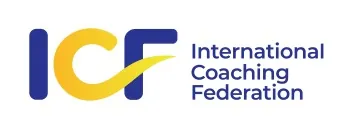

Markus Friedrichs ist Gründer und Geschäftsführer von Biomentric. Nach 20 Jahren als Führungskraft bei internationalen Unternehmen wie Axel Springer, Motorola und Nielsen GfK zog es ihn zurück an die Universität. Er studierte klinische Psychologie und Neurowissenschaft am Institute of Psychiatry, Psychology and Neuroscience des King's College, London. Gleichzeitig arbeitete er als wissenschaftlicher Mitarbeiter am Max-Planck-Institut für Psychiatrie in München an einem Forschungsprojekt zur Entwicklung digitaler Diagnostik- und Therapieanwendungen für Burnout und Depressionen. Aus diesem Projekt heraus wurde 2024 mit Unterstützung von Max-Planck-Innovation die Präventionsanwendung actiself entwickelt.
Die Verbindung von langjähriger Erfahrung als Führungskraft, Coach und Trainer sowie einer vielfältigen akademischen Ausbildung bilden für Markus Friedrichs die Grundlage seiner Tätigkeit. Er ist seit 2017 außerdem Dozent an der ISM (International School of Management) sowie der Universität der Bundeswehr.
Ausbildung:
Universität Hamburg: Studium Amerikanistik, Germanistik, Pädagogik, Abschluss: Magister Atrium (MA)
Chicago University, Booth School of Business: Business Administration, Abschluss: Diploma
University of Oxford, Said Business School: Executive Education
IESE Business School, Barcelona: Executive Education
King's College London, Psychology & Neuroscience of Mental Health, Abschluss: Master of Science (MSc)
